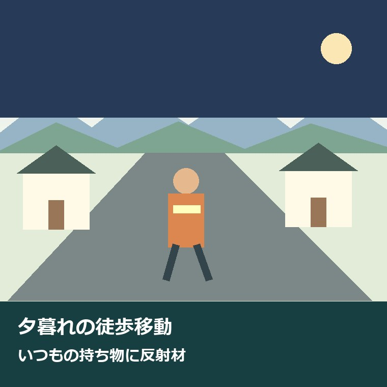
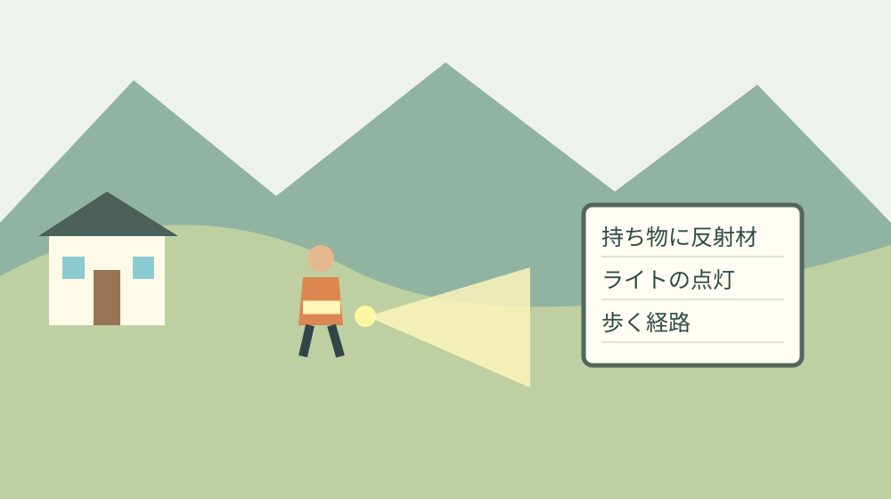

森町の夕暮れの徒歩移動｜反射材で備える

見守る人の努力に、家族の持ち物の準備を足す
森町で登下校や地域の移動を見守る人、買い物や駅への送迎を引き受ける人は、自分の時間を使って誰かの移動を支えています。安全を呼び掛けるときは、その努力と負担を先に認めたい。この記事は、見守る人へさらに仕事を頼む前に、歩く本人と家族が準備できることを整理するものです。
夕方に徒歩で買い物へ出る人や、駅から家へ帰る人には、行きと帰りで道の見え方が変わるという課題があります。昼間の歩きやすさだけで経路を決めず、帰る時間まで含めて考えます。離れて暮らす家族も、普段使うバッグや靴の確認なら話を始めやすいはずです。
私は大石浩之（磐田市／不動産業）です。森町の暮らしの可能性を考えるとき、家から店や駅まで移動を続けられるかを外せません。反射材を勧める話も、道具の紹介で終わらせず、誰が付けて、どの持ち物と一緒に外へ出るのかまで落としたいと考えます。
昼間の徒歩移動を含む暮らしの確認は、森町でお盆の3日間に歩いて確かめることにもつながります。本記事では範囲を夕暮れの移動に絞り、今日、普段の持ち物に反射材を付けるという一歩を提案します。
秋の全国交通安全運動は2026年9月21〜30日
静岡県の令和8年秋の全国交通安全運動実施要綱によると、運動期間は2026年9月21日（月）から9月30日（水）までの10日間です。県の掲載ページは9月17日更新。9月25日公開のこの記事は、運動期間中にできる準備を、要綱の1〜2ページを基に整理しています。
要綱の重点には、歩行者の安全確保と反射材用品等の着用促進が掲げられています。反射材、LEDライト、明るい衣服の着用を案内しており、子どもや高齢者だけに限った話ではありません。夕方や夜に歩く家族それぞれの持ち物を見直すきっかけにできます。
要綱は、横断歩道の利用や信号を守ることに加え、手を上げるなどして横断する意思を示し、横断前と横断中にも安全を確かめる行動を促しています。反射材を付けたから車が必ず止まると考えず、道具の準備と歩くときの確認を両方続けます。
運転する側にも、歩行者を優先する運転と夕暮れ時の早めのライト点灯が求められています。要綱にある16時からの早めの点灯という呼び掛けは、森町の毎日の日没時刻を示す数字ではありません。天候や周囲の明るさを見て備える話と、特定日の太陽が沈む時刻は分けて扱います。
反射材は自分で光らない。ライトとは役割が違う
警察庁の反射材の案内では、反射材は車のライトなどの光を反射して、歩行者の存在を運転者へ伝えるためのものと説明されています。LEDライトのように自ら光る道具とは仕組みが違います。反射材を持っていることと、暗い足元を照らせることは同じではありません。
意外に見落としやすいのは、反射材が光を返すには、その面が隠れていないことが必要だという点です。バッグの中へ入れたままにせず、外から見える位置に付けます。上着の裾や買い物袋に隠れていないか、出掛けるときの姿で確かめる方が、机の上で品物だけを見るより役に立ちます。
警察庁は、靴、衣服、バッグ、つえなどに使える反射材を紹介しています。普段使う物に合わせて選べるのは利点です。ただし、つえの握りや接地を妨げたり、長いひもが引っ掛かったりしないよう、製品の説明に従って取り付けます。本人が扱える形であることを先に考えます。
私は反射材とライトを、片方があれば片方は不要という関係では捉えません。存在を伝える準備と、足元や進む方向を確かめる準備には違いがあります。ライトは人や車へ強い光を向けず、本人が操作しやすい物を使う。道具が増えて手がふさがるなら持ち方も一緒に見直します。
普段のバッグに付けるところまでを準備にする
反射材を用意する際は、最初に普段どのバッグで出掛けるかを確認します。買い物用、通勤用、散歩用が別なら、夕方の移動で使う物を選びます。本人が使わない新品のバッグを贈るより、いつも持つ物に付けられるかを聞く方が、外へ持ち出す段取りを決めやすくなります。
取り付けた後は、上着を着てバッグを持った姿で、反射材が隠れないかを確かめます。車道へ出て試す必要はありません。家の中や安全な敷地で確認し、道路上での撮影や、車の前へ立って見え方を試す行動は避けます。確認のために新しい危険を作らない方法を選びます。
ライトはスイッチの位置、点灯、電池や充電の状態を出発前に確認します。離れた家族が用意するなら、充電器の保管場所や交換の方法も本人に分かる形で伝えます。操作が複雑で使われないままになるより、本人が無理なく扱えることを優先したいと私は考えます。
買って渡しただけでは、備えは終わらない。いつもの持ち物に付けて初めて外へ出る。これが今回、私が言い切りたいことです。反射材の名前を覚えてもらうより、玄関を出るときに一緒に持ち出せる状態を家族で作る方が、生活の段取りとして意味があります。
帰る時間の道を、昼間の印象だけで決めない
夕暮れの徒歩移動では、目的地までの距離と、帰りに使う道の条件を分けて確認します。横断する場所、歩道の有無、段差、車の出入り口などを、本人が知っている範囲から整理します。この記事で森町の全道路の照明や夜間の歩きやすさを現地調査したわけではありません。
初めての道を暗い時間に確かめる必要はありません。昼間に無理なく確認できる範囲で経路を見て、暗くなってから困る場所は本人の話を聞きます。道が暗いという課題があるなら、今日できる一歩は、帰宅時に避けたい区間を地図へ一つ記して家族と共有することです。
森町の防災マップは、洪水や土砂災害の危険箇所、避難先などを確認する公的な資料です。ただし、街灯の明るさや夜間の歩行の安全を保証する地図ではありません。雨のときの経路の検討に使いながら、日常の段差や照明の状態は別の確認事項として残します。
買い物を終える時間が遅くなる可能性がある日は、歩いて帰る以外の方法も出発前に検討します。森町の公共交通の案内から、自分の行き先に合う路線や利用条件へ進めます。希望する時間に利用できると決め付けず、運行日、帰りの時刻、予約の要否を個別に確認してください。
良い点と注文したい点｜使い続ける担い手を家族で分ける
反射材を身近な持ち物に付けられることは、今回の案内の良い点です。特別な外出の日だけ準備するのでなく、日常のバッグや靴と一緒に使えます。家族が夕方の移動について話す際も、使う物を一つ示しながら、困る時間や道を具体的に聞けます。
県の要綱が歩行者と運転者の双方へ行動を示している点も評価したいと思います。見守る人だけへ注意を任せず、歩く人の備え、運転者の確認、家族の準備をそれぞれ考える入口になります。反射材という小さな道具から、帰宅までの動きを見直せることに実利があります。
残る課題は、道具を使える状態で保つ担い手です。電池の確認や付け替えまで、普段送迎をしている一人へ頼めば負担は増えます。今日は、反射材を付ける担当とライトを確認する担当を、本人の希望を聞いて一度決める。遠方の家族も、手配や確認の連絡を引き受けられます。
私は、送迎を増やせば解決すると簡単には言えません。仕事や家事と両立している家族には限界があります。免許返納と地区ごとの移動の確認も使い、歩く、公共交通を使う、迎えを頼むという候補を、実際に続けられる条件で整理したいところです。

対案・結論｜今日は持ち物に反射材を一つ付ける
今日の一歩は、普段の持ち物に反射材を一つ付けることです。家に使える反射材があれば状態と説明を確認して活用し、なければ本人が使う物に合う形を探します。付ける場所を本人と確かめ、外から見えることと、歩行や荷物の扱いを妨げないことを確認します。
反射材を付け終えたら、帰宅に使う予定の道と時間を一つだけ話します。暗い道が苦手なのか、横断する場所が不安なのかで、次に調べることは違います。全部の移動を一度に変えようとせず、夕方の買い物や駅からの帰宅など、実際の用事に結び付けて確認します。
運転する家族は、歩行者側の準備だけを求めず、自分の運転も確認します。2026年9月1日からの生活道路の速度変更は、森町の生活道路と法定速度30km/hの対象に整理しました。反射材が見えることを前提に速度や安全確認を省く理由にはなりません。
横断するときは信号や横断歩道を確認し、車の動きを見ながら、渡る前も渡っている間も安全を確かめます。スマートフォンを見ながらの歩行を避けることも、県の要綱が示す行動です。反射材という物の準備と、自分で周囲を見る行動を、別々の項目として忘れずに残します。
離れて暮らす家族は、本人の使い方を聞く
離れて暮らす家族が連絡するときは、『気を付けて』だけで終わらせず、夕方はどのバッグで出掛けるかを聞くところから始められます。使う物が分かれば、付ける位置や必要な形の相談に進めます。本人の外出を一方的に禁止する話にせず、続けたい用事を支える聞き方を選びます。
写真で確認する場合も、本人が自宅など安全な場所で対応できるときに限ります。歩行中や道路を横断しながら返信してもらう必要はありません。写真には住所や家族の連絡先が映り込まないようにし、反射材を付けた持ち物だけで話ができる範囲にとどめます。
本人が道具を使いにくいと言うなら、説得する前に理由を聞きます。留め具が固い、バッグを替える、ライトのスイッチが分かりにくいなど、確認する点は具体的です。この記事だけで一人ひとりに合う製品は決められません。私なら、本人が続けられる条件が分かるまで選択を急ぎません。
運動期間の9月30日を過ぎても、夕方の外出は続きます。反射材が外れていないか、ライトが点くかを普段の支度の中で確認できる形にします。毎回誰かが声を掛けなければ使えない状態を少し減らすことが、本人にも、見守る家族にも負担の軽い備えになると考えます。
大石の視点｜見守りへの感謝を、頼み事だけで終わらせない
私は、見守りへの感謝を、これからもお願いしますという頼み事だけで終わらせたくありません。森町の移動を支える人の時間には限りがあります。家族が持ち物を整える、帰宅方法を先に確認する。その小さな分担を積み重ねることが、担い手へ負担を寄せ続けないための現実的な一歩です。
反射材を付けない人が悪い、という結論にはしません。車を運転する人が歩行者を守る責任は、服の色や道具の有無で消えません。そのうえで、自分や家族ができる備えを一つ増やす。誰かの落ち度を探す話と、明日の移動を少し整える話を混ぜないようにしたいと思います。
森町で暮らす可能性を感じる一方、移動を支える担い手が疲れ切る形では続きません。大きな仕組みの話を始める前に、今使うバッグへ反射材を付ける人を決める。理念を家庭の段取りへ移すという意味で、私はその小ささを軽く見ない立場です。
まとめ｜帰りの道と、いつもの持ち物を一緒に考える
2026年9月21〜30日の秋の全国交通安全運動は、歩行者の安全確保と反射材用品の着用を重点にしています。反射材、LEDライト、明るい衣服を活用し、横断前と横断中も安全を確認します。個別の道路の明るさや使える交通手段は、公式資料だけで分からない部分を残して確認します。
今日は普段の持ち物に反射材を一つ付けてください。見守りや送迎を担う人の努力を認めながら、本人と家族が持てる役割を一つ足す。道具を買ったという報告より、夕方の用事へ持って出られる状態を整えたことを、今回の備えの成果にします。
よくある質問
夕暮れの徒歩移動について、2026年9月25日に確認した県の実施要綱と警察庁の案内から、家族で迷いやすい点を整理します。
2026年秋の全国交通安全運動はいつですか？
2026年9月21日（月）から9月30日（水）までの10日間です。静岡県の実施要綱は、歩行者の安全確保と反射材用品の着用促進を重点に掲げています。子どもや高齢者だけでなく、夕暮れや夜間に歩く人それぞれが、反射材、LEDライト、明るい衣服を活用する案内です。期間後も普段の支度として備えを続けます。
反射材を付ければ、ライトや安全確認は不要ですか？
不要にはなりません。反射材は車のライトなどを反射する物で、自ら光るLEDライトとは役割が異なります。外から見える位置へ付け、明るい衣服なども組み合わせます。横断前と横断中の安全確認も続けてください。反射材が事故を防ぐ保証はなく、運転者の歩行者保護の責任を肩代わりする道具でもありません。
森町から離れて暮らす家族にもできることはありますか？
本人が夕方に使うバッグや靴を聞き、合う反射材の準備や取り付けの相談をすることから始められます。ライトの点灯や操作方法も確認します。帰宅の経路や時間に不安があれば、森町の公共交通の案内から個別の運行条件を調べる役割も持てます。本人の希望を聞き、見守りや送迎を担う一人へ確認を集中させない形を考えます。

公式情報源
2026年9月25日確認。制度・数値・運行案内は変更される場合があります。利用前に公式情報を再確認し、個別の法令・土地・権利の判断は担当窓口や専門家へ相談してください。
- 静岡県：令和8年秋の全国交通安全運動実施要綱（1〜2ページ）（2026年9月25日確認）
- 静岡県：秋の全国交通安全運動（2026年9月17日更新）（2026年9月25日確認）
- 警察庁：反射材・ライトの活用（2026年9月25日確認）
- 森町：森町防災マップ（ハザードマップ）（2026年9月25日確認）
- 森町：公共交通の案内（2026年9月25日確認）